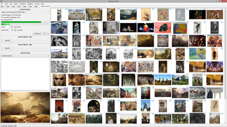
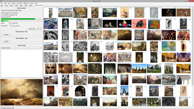
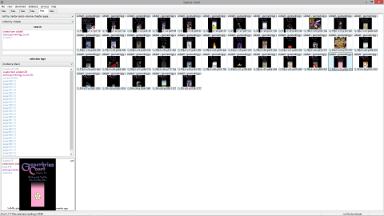
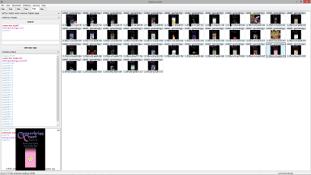
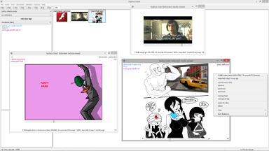
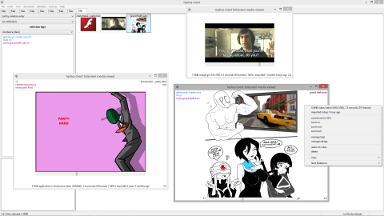

 

 



Although I try to make hydrus's interface simple, some of the things it does are quite complicated. Please read the introduction and skim the simple getting started guides at the least. If you like, you can revisit the more complicated topics later, once you are experienced in the basics.
Keeping the help up to date is a constant battle. If you discover something really does not match the program, or is otherwise confusing or not well worded, please let me know.